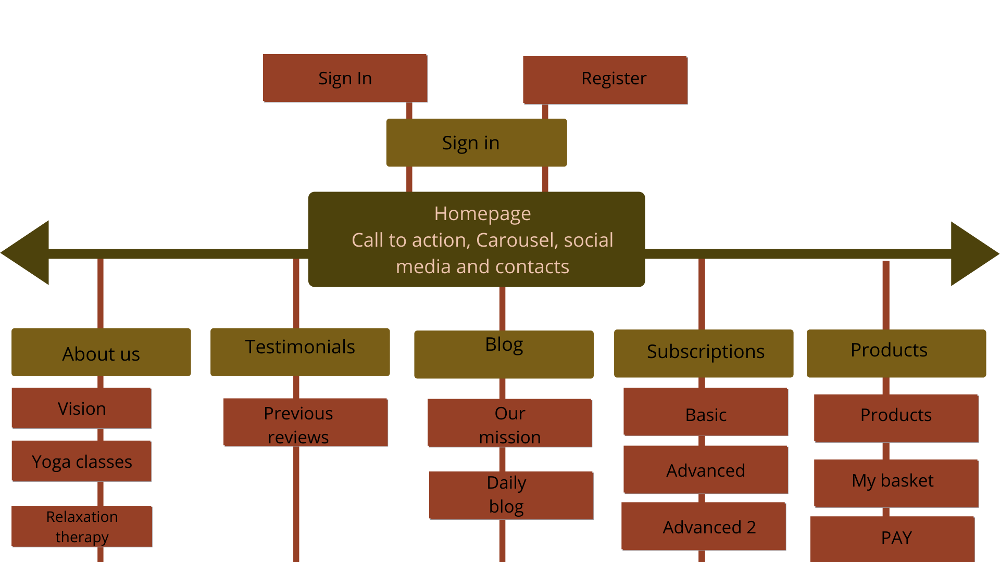
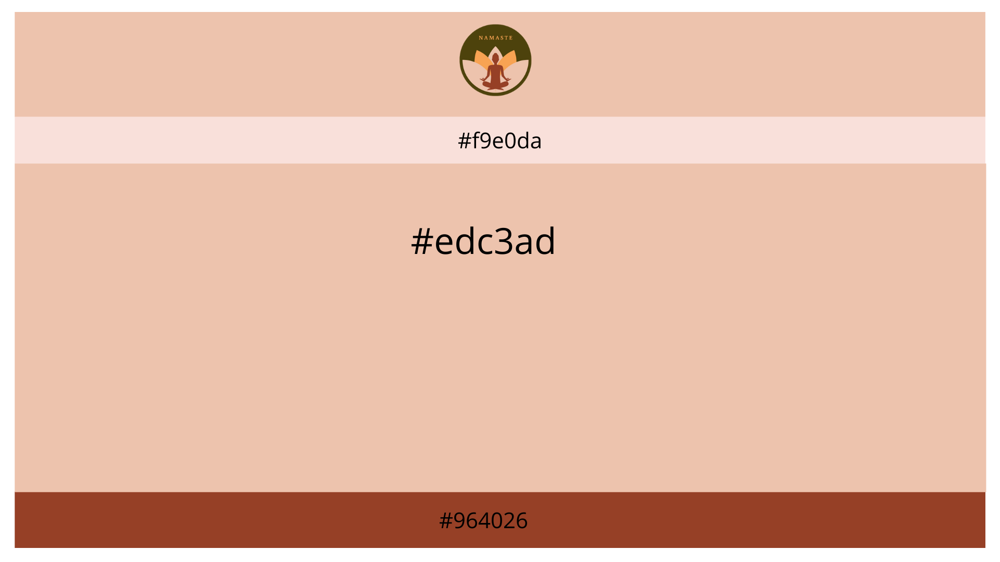
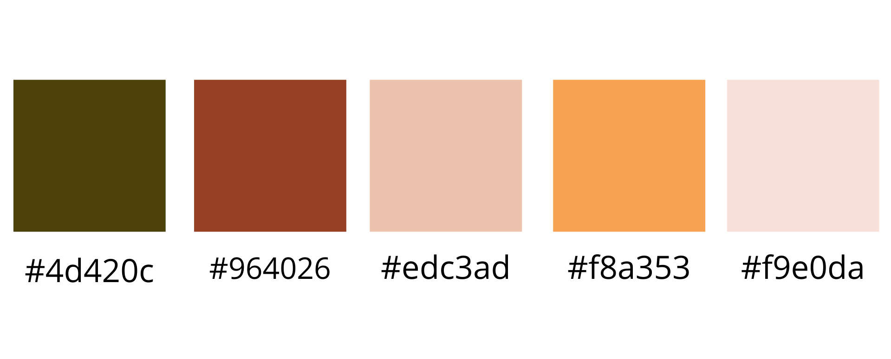
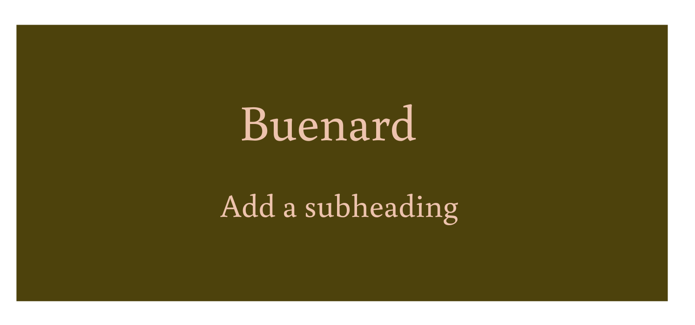

Flow diagram with navigation and structure
The main aim of our website is for user to get a different subsctiption and shop in our e-shop where they can buy holistic medicine. We wanted our whole website to be focused on this two things. This is why in the main page there is a call to action asking to subscribe. As well as, navigation bar with the link to e-shop and subscription page is always visible to the customer no mattter on what page they are. To get the as much purchases as possible, we created the following workflow and navigation structure for our website:

WIREFRAMES
This is a general layout of our website. For our websites a few features have to be visible all the time while going through the website. This information is stated in the navigation bar. Also the header and the footer are always visible on the website. The header shows the logo that includes the name of the brand. We think every user should keep us in mind while going through the website. The footer shows the contact information and provides links to our social media accounts: facebook and instagram. Users are always able to click on these links, no matter what page they are on.

Colors
All the colors on the website are natural-earth tone colors. We are a natural organic brand that focuses on natural healing, that is why we choose the colors that remind us of nature, earth, and different seasons. The colors are not bright because we want to give a customer a feeling of stillness and peace. This what our brand is about. Earth tones are also considered to be more appealing and functional and tend to be perceived as warm, reassuring, and settling.

Fonts
The font was choosed based on the Brand Road Map. It is a special google font, called Buenard. This font is simple, but more graphical and match our brand logo. It is a soft font without any curls, this is why our website is easy to ready and the website is clear for every user.

USER TESTING REPORT
For the user testing we asked people from our target group to do different tasks using our digital website prototype that we created using Adobe XD. The tasks were very diverse and included the most important features of our first prototype of the website:
- -To sign in into the page and pick a subscription
- -Read more about the company and buy something from the e-shop
- -Register for the website then go to the testimonials and then buy a product but later switch it to another one.
- - Go to purchase a subscription after purchasing subscription another task was to buy a product and afterwards read feedback from the customers
- HERE YOU CAN FIND THE LINK TO OUR DIGITAL PROTOTYPE
RESULTS FROM PARTICIPANTS
Thijs van der Heijden 20
I will ask tester one to sign in into his Namaste account and then pick a subscription that he wants. When he chooses a subscription, he will have the option to go back and change his decision or go to payment.
The participant went easily through the site and liked it. When I asked him to sign in, he went to the register bottom, which is perfect, because I didn’t tell him to do so. He didn’t have an account so registering would be the best option. When I told him more about the site he asked where he could find the chatroom. This is something we later realized is not going to be part of our site anymore (based on the interviews from management). He also gave a tip to add a search bar. This is a tip we think is good to include.
Wout van Gerwen 21
I will ask tester two to do the same thing as tester 1, which is signing in and buying a subscription. Then he has to go to payment to pay for it.
The participant had no trouble signing in. He signed in by the sign in bottom and did not register first, but I didn’t ask him to do that, so that is fine. Next when I asked him to buy a subscription he immediately went to products and asked hesitantly if that was right. When he couldn’t go any further, I told him that the subscription was on the home page. Buying a subscription was no problem for him, but he did tell me that when he went to look for something he went to look for it on the top of the page in the navigation. The subscription bottom was missing from there so we came to the conclusion that it would be smart to also add it in the navigation to be sure.
Victor Spijkers 39
I gave him the task to read more about the company and after going to the products of the company and buy something. When he started, he immediately went to the "About us" button what was correct. He got confused if he was correct because there was no actual text only an example of a box with the words "Text about company" so he tried to find it somewhere else and realized that he was correct the first time. When he realized that he went to the "Products" button to buy a product. That was also correct in the first try. He tried to buy product nr 4 and product nr 7. He missed the "Make sure you sign in or register before purchasing" button before he went to buy a product. He thought he would get automatically to the making an account page after he would click the "Go to payment" button. He was content with the prototype. Only comment he had was that he would want to go to the register page after clicking on the "Go to payment" button.
Callum Clousen 20
His task was to register for the website then go to the testimonials and then buy a product but later switch it to another one. When Callum was looking for register button instead of pressing sign in, he pressed get subscription and then he decided to choose a payment (the button did not work). After he finished this he easily found “testimonial” button but he as the first participant got confused about text being not there. Then he went to another task which was to pick a product but later switch it. The beginning was fine, however when he had to go back to cart, he could not find it, so he just picked another product since it opens cart immediately. However, cart did not have product elimination button.
The necessary improvement: make that registration button would be visible more, add the cart button and in the cart button there should be also “product elimination from the cart” button.
Velizar Kunov 21
Velizar’s task was to register to the website (to check if there is still a problem with it) then go to purchase a subscription after purchasing subscription another task was to buy a product and afterwards read feedback from the customers. With the words “I guess registration is there” he went to sign in button, and he have pressed registered button, but nothing happened, so he said he assume that he registered. For getting subscription he did not have big problems he pressed “get subscription” he has chosen “basic”, and he went to the payment and he got confused since the button “payment method” did not work. And for the las task he did not find any problem of going to “contacts”
Possible improvements: clear register button, and the process of registration, also with button choose the method of payment.
CONCLUSION
Our test results were really clear, and we got some good tips and realization out of it. Sadly, we are limited in adding certain aspects into our prototype, like for example a working search bar. However, we will be able to add one in our official html and will definitely not forget about this. Because of the fact that it is a basic prototype we decided to not add ALL of the aspects that we think are smart into the real site. This will make the site way to big and complicated, also because we are not planning to make a lot of separate html pages in our website. We want to focus the most on the important pages like subscription pages, products, and reviews. We let out the chatroom function, because we found out in our lean canvas interviews that people are not interested in this function. We also didn’t choose for the visitor to be automatically directed to the sign in page, because of the fact that our sign in is not really working (we cannot ask them to officially sign in). We can’t send them back to the sign in when paying, because we can’t control if they have already signed in or not and we don’t think it is necessary for them to sign in again. A warning at the product page will hopefully be enough for them to sign in first.
IMPROVEMENT
- - Search bar should be added in real html
- -We added subsctiption button in navigation
- -We also added bring automatically back to home after payment because payment option not possible
- - Product elimenation from the chart should be added as well